Status-Updates¶

Big Ten Academic Alliance
Geospatial Information Network
Status Report
December 2022

Table of Contents
Highlight
Statistics Operations Community What’s Next?
Highlight: BTAA GIS Conference 2022
Established in 2020\, the BTAA GIS Conference is a virtual event organized by geospatial information users and educators in Big Ten institutions to present their work\, exchange information\, and develop potential collaborations. It is open to all participants\, including those outside the BTAA network.
The third annual BTAA GIS Conference was held on Tuesday\, November 15th\, 2022. Highlights included:
A variety of presenters
Two keynote speakers from Native Land Digital
12 presenters from 8 different universities
Career panels with BTAA 7 alumni
I ncrease in attendance (approximately double the engagement compared to last year)
2021: 162 registrants\, 96 unique attendees
2022: 307 registrants\, 193 unique attendees
Improved planning and coordination
Started a new partnership with the BTAA to promote and host the webinar
Designated the Community Engagement & Education Outreach Committee to kick off annual planning
Created a planning checklist for next year
Read the BTAA GIS Conference 2022 final report

Statistics: Site Traffic
How users found the site
_ Main channels_
Google (89%)
direct link (7.5%)
datasetsearch.research.google.com (1%)
_ Less than 1% (~ a few dozen people each)_
guides.libraries.psu.edu
libguides.lib.msu.edu
geography.wisc.edu
geoblacklight.org
libguides.umn.edu
iupui.libguides.com
guides.osu.edu
Month of October Users of Blog\, Geoportal\, & Project Site (2018-2022)
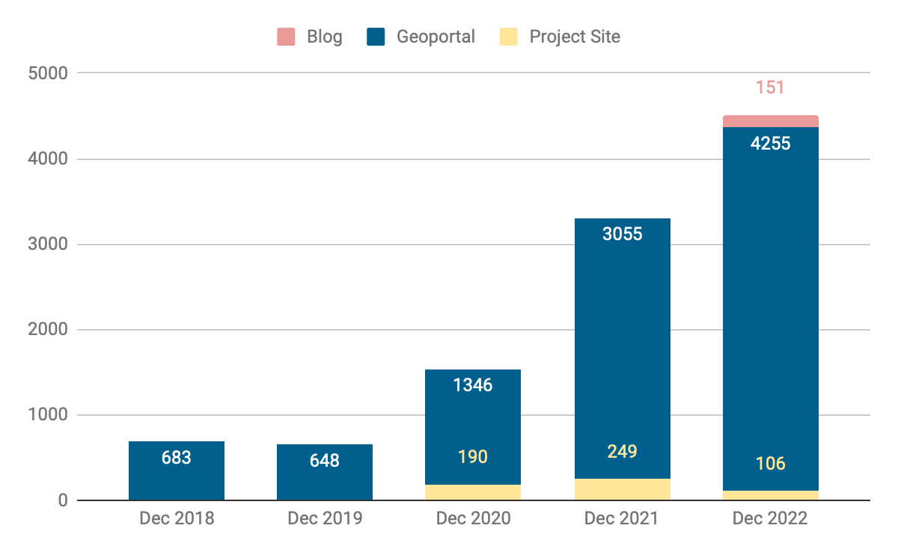

Statistics: Top Visited Pages
| PARENT PAGES | ITEM PAGES | DOWNLOADS (279 total) |
|---|---|---|
| Wisconsin Historic Aerial Imagery Finder (Aerial Photos 1937-41) (236) | Maryland Power Outages - by ZIP Code (195) | Roads from INDOT and TIGER Files: Indiana (25) |
| Digital Sanborn Maps (Black & White): All States, 1867-1970 (198) | Snow Plow Camera Images (Iowa DOT) (118 )+ | Historic County Boundaries and Total Population: United States, 1910 (10); 1920 (7) |
| Fire Insurance Maps Online (FIMo): All States (67) | Research Guide to Restricted or Licensed Data (72) | City Boundaries [Iowa] (8) |
| Digital Sanborn Maps (Black & White) NY (162) CA (91) NJ (82) |
26N 05E - Survey Map of Mitchell Township, Alcona County, Page 1 [Michigan] (5) + | |
| Riparian and Stream Survey [New Jersey] (63) + | Parcels: Hamilton County, Indiana (5) + | |
| new to top pages + |

Operations: Collections
Number of BTAA Geoportal records over time (2017-present)
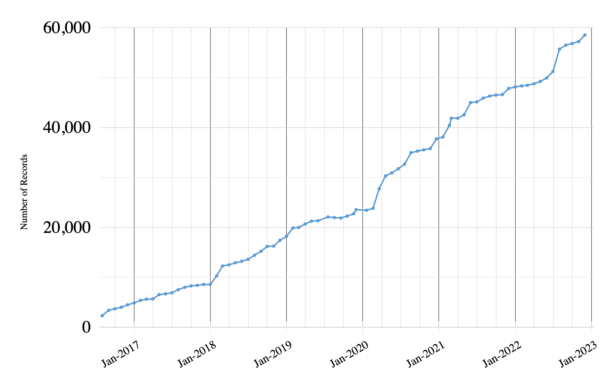
Total Item Records: 58\,561
New records: 1329
Coal Maps of PA (1159)
UW-Madison Robinson Map Library (45)
Socrata data portals (110)
Retired records: 84

Operations: Application Development
P rimary milestones 2022
added dashboard queries for GEOMG
upgraded to Ruby 3
Geoportal migrated to AWS servers
enabled multiple downloads per item
implemented new color scheme for accessibility
enabled multiple bounding boxes per item
released official version 4
redesigned item page layout
GEOMG export and analysis enhancements
multiple geometries
accessibility improvements
upgraded to GeoBlacklight’s
v.4 release candidate
fixed slow speed issue
improved lifecycle tracking in GEOMG
updated GeoBlacklight documentation
redesigned search page layout
fixed map search bugs
Refactored GEOMG in preparation for offering to other institutions

Community: Committees
Steering
Discussing future directions and DEIA goals
Community Engagement
Decided to merge with the Education Outreach subcommittee - next joint meeting in January
Interface
Continuing work on site survey design
Collections Development
starting an environmental scan in January to examine how cultural heritage institutions are handling resources about tribal lands or created by tribally affiliated groups and how these approaches might translate to BTAA Geoportal practices (derives from Land Acknowledgement Action Plan item #2).

Community: Working Groups
Conference Planning:
Sunsetted

What’s Next?
January
Synthesize discussions from Future Directions meetings and develop proposal for next steps

Big Ten Academic Alliance
Geospatial Information Network
Status Report
November 2022

Table of Contents
Highlight
Statistics Operations Community What’s Next?
Highlight: Item Page Layout Redesign
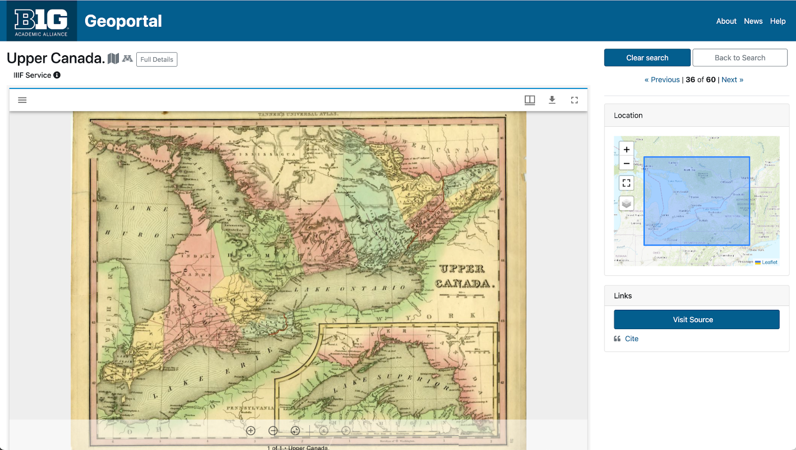

We tackled a long standing design wish to utilize full page widths and reduce the white space on item pages. This layout prioritizes item previews\, such as a geospatial web service or a IIIF viewer\, and provides more options for further adjusting location of the metadata and the access links.

Statistics: Site Traffic
How users found the site
_ Main channels_
Google (84.5%)
direct link (7%)
B ing (3%)
datasetsearch.research.google.com (1%)
_ Less than 1% (~ a few dozen people each)_
Yahoo
michaelminn.net
DuckDuckGo
facebook.com
geoblacklight.org
search.libraries.wisc.edu
Month of October Users of Blog\, Geoportal\, & Project Site (2018-2022)
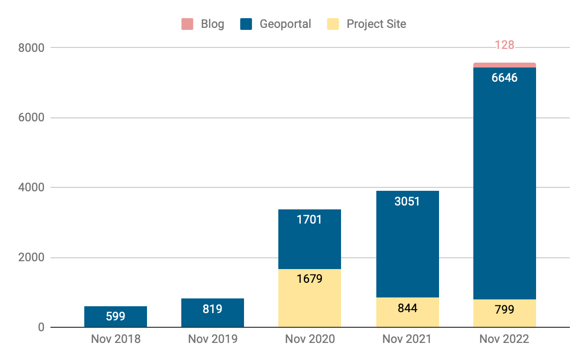

Statistics: Top Visited Pages
| PARENT PAGES | ITEM PAGES | DOWNLOADS (413 total) |
|---|---|---|
| Wisconsin Historic Aerial Imagery Finder (Aerial Photos 1937-41) (335) | Big Game Check Stations: Nebraska (1449) + |
Roads from INDOT and TIGER Files: Indiana (19) |
| Digital Sanborn Maps (Black & White): All States, 1867-1970 (217) | Maryland Power Outages - by ZIP Code (207) | Quaternary Geologic Map : Indiana (19) |
| Fire Insurance Maps Online (FIMo): All States (97) | Voting Precincts: Stark County, Ohio (104) + | Historic County Boundaries and Total Population: United States, 1980 (6); 1860 (7); 1880 (6); 1940 (7) |
| Digital Sanborn Maps (Black & White) CA (150) NY (147) MI (83) |
City Boundaries [Iowa] (11) |
|
| Research Guide to Restricted or Licensed Data (88) | Map of Home Owners' Loan Corporation [Durham, North Carolina] {1937} (7) + | |
| new to top pages + |

Operations: Collections
Number of BTAA Geoportal records over time (2017-present)
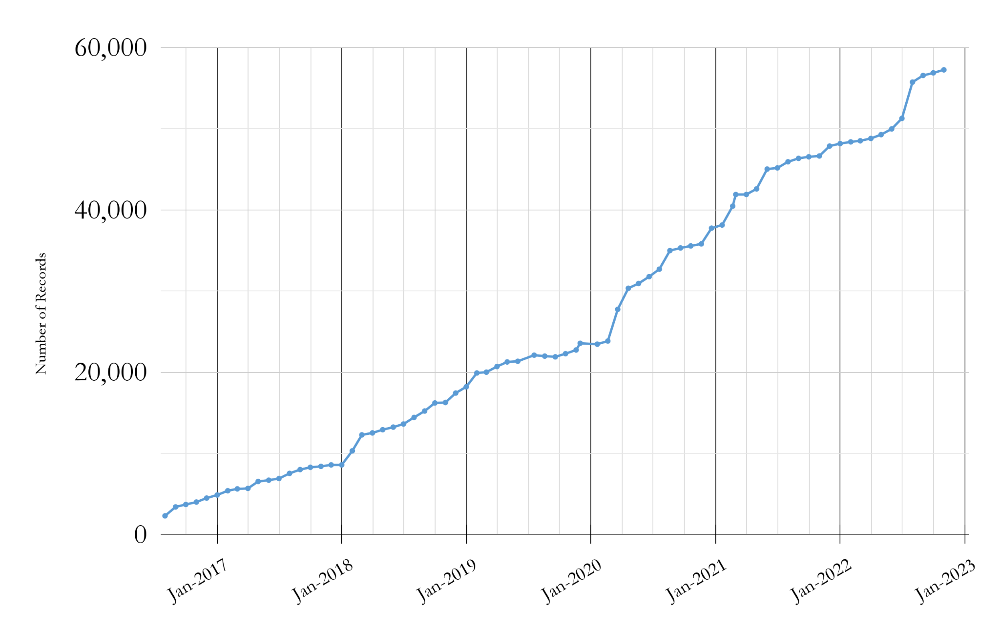
Total Item Records: 57\,240
New records: 2022
Pennsylvania PASDA (1926)
University of Nebraska maps (372)
+ UW-Madison Robinson Map Library (99)\, WisconsinView (51)
Retired records: 1981

Operations: Application Development
P rimary milestones 2022
added dashboard queries for GEOMG
upgraded to Ruby 3
Geoportal migrated to AWS servers
enabled multiple downloads per item
implemented new color scheme for accessibility
enabled multiple bounding boxes per item
released official version 4
redesigned item page layout
GEOMG export and analysis enhancements
multiple geometries
accessibility improvements
upgraded to GeoBlacklight’s
v.4 release candidate
fixed slow speed issue
improved lifecycle tracking in GEOMG
updated GeoBlacklight documentation
redesigned search page layout
fixed map search bugs
GEOMG released for adoption

Community: Committees
Steering
Discussing future directions and DEIA goals
Community Engagement
Decided that the committee will be responsible for getting it BTAA GIS Conference started in future years
Interface
Continuing work on site survey design
Metadata
Discussed scope of our DEIA goal around best practices for metadata remediation of derogatory or offensive place names
Discussed need for attention to bounding box quality (given recent changes to the search interface)

Community: Working Groups
- Creator Standardization:
- Issued final reports and sunsetted
- Best Practices for Standardizing Creator Field Data
- Semi-automated standardization process using OpenRefine
- Conference Planning:
- Ran 2022 conference
- wrapping up with final tasks and reporting
- Original Content:
- Sunsetted

What’s Next?
December
Upgrade Tutorials for accessibility
Complete BTAA GIS Conference report
Sunset Creator Standardization Workgroup

Big Ten Academic Alliance
Geospatial Information Network
Status Report
October 2022

Table of Contents
Highlight
Statistics Operations Community What’s Next?
We redesigned the search results page to emphasize the map and simplify the layout.
Highlight: Redesigned Search Results Page

Problem #1 : The map search was somewhat hidden\, because users needed to click a toggle to turn it on.
Solution : We removed the toggle and combined the list & map search views to the same page.
Problem #2 : The map search returned up to 1000 items and displayed the results using map clusters. This caused user confusion as this did not match the text results list.
Solution : We removed the clustering and added numbers to each markers that match the item in the result list.

Statistics: Site Traffic
How users found the site
_ Main channels_
Google (83%)
direct link (7%)
B ing (3%)
datasetsearch.research.google.com (1%)
_ Less than 1% (~ a few dozen people each)_
DuckDuckGo
Yahoo
guides.libraries.psu.edu
libguides.lib.msu.edu
michaelminn.net
guides.osu.edu
Month of October Users of Blog\, Geoportal\, & Project Site (2018-2022)
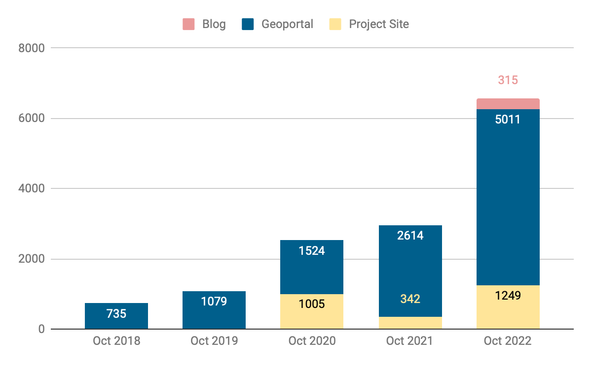

Statistics: Top Visited Pages
| PARENT PAGES | ITEM PAGES | DOWNLOADS (492 total) |
|---|---|---|
| Wisconsin Historic Aerial Imagery Finder (Aerial Photos 1937-41) (306) | Remonumented Section Corners: Michigan (124) | Roads from INDOT and TIGER Files: Indiana (23) |
| Digital Sanborn Maps (Black & White): All States, 1867-1970 (274) | Digital Sanborn Maps (Black & White) NY (144) CA (127) MI (96) |
Historic County Boundaries and Total Population: United States, 1980 (14); 1860 (12); 1910 (12); 1920 (10); 1940 (7) |
| Sanborn Maps: Pennsylvania, 1884-1938 (74) | Research Guide to Restricted or Licensed Data (99) | City Boundaries [Iowa] (6) |
| Fire Insurance Maps Online (FIMo): All States - Big Ten Academic Alliance Geoportal (50) | Urban Rural Demarcation Line: Baltimore County, Maryland (74) | ZIP code boundaries: Baltimore, Maryland (5) |
| Big Game Check Stations: Nebraska (73) | ||
| new to top pages + |

Operations: Collections
Number of BTAA Geoportal records over time (2017-present)

Total Item Records: 56\,868
New records: 355
ArcGIS Hubs (342)
ERDDAP (13)
Retired records: 73

Operations: Application Development
P rimary milestones 2022
added dashboard queries for GEOMG
upgraded to Ruby 3
Geoportal migrated to AWS servers
enabled multiple downloads per item
implemented new color scheme for accessibility
enabled multiple bounding boxes per item
released official version 4
GEOMG development
multiple geometries
accessibility improvements
upgraded to GeoBlacklight’s
v.4 release candidate
fixed slow speed issue
improved lifecycle tracking in GEOMG
updated GeoBlacklight documentation
redesigned search page layout
fixed map search bugs
GEOMG released for adoption

Community: Committees
Steering
Discussing future directions and DEIA goals
Community Engagement
Updated charter
Interface
Communicated with the Library Accessibility Alliance to test the Geoportal
Selected polling questions for site
Metadata & CDEO
did not meet

Community: Working Groups
Creator Standardization:
Scheduled a working meeting in November to finish up work from September’s metadata sprint
Conference Planning:
Set agenda
Assigned facilitators to each session
Original Content:
Submitted final report for review

What’s Next?
November
Host BTAA GIS Conference
Sunset Original Content Working Group
December
Upgrade Tutorials for accessibility

Big Ten Academic Alliance
Geospatial Information Network
Status Report
September 2022

Table of Contents
Highlight
Statistics Operations Community What’s Next?
Highlight: GeoBlacklight version 4.0
During the September GeoBlacklight (GBL) Community Sprint\, we released GeoBlacklight version 4.0 . This version provides full support for the OpenGeoMetadata ‘Aardvark’ metadata schema and represents concerted efforts from many in the GBL community - Read more about the release here.
Over the past few years\, the BTAA-GIN has provided the primary leadership and momentum for the GBL community. We can attribute this to at least two aspects of the BTAA-GIN’s structure and goals:
We have two Operations Team employees designated to work on the Geoportal as their sole or primary activity: an on-staff Product Manager @ 1.0 FTE and an independent Application Developer\, who works a focused weeklong sprint every month. This allocation differs from institutions with staff responsible for a myriad of applications.
We value collaboration and open documentation\, which allows us to focus on contributions to the broader geospatial library community. This emphasis is distinct from many individual academic institutions that are mandated to focus exclusively on their own application ecosystem.

Statistics: Site Traffic
How users found the site
_ Main channels_
Google (83%)
direct link (7%)
B ing (3%)
datasetsearch.research.google.com (1%)
_ Less than 1% (~ a few dozen people each)_
Yahoo
DuckDuckGo
guides.libraries.psu.edu
geoblacklight.org
libguides.umn.edu
geography.wisc.edu
Month of September Users of Blog\, Geoportal\, & Project Site (2018-2022)


Statistics: Top Visited Pages
| PARENT PAGES | ITEM PAGES | DOWNLOADS |
|---|---|---|
| Wisconsin Historic Aerial Imagery Finder (Aerial Photos 1937-41) (273) | Maryland Power Outages - by ZIP Code: State of Maryland (110) | Roads from INDOT and TIGER Files: Indiana (24) |
| Digital Sanborn Maps (Black & White): All States, 1867-1970 (273) | Digital Sanborn Maps (Black & White) NY (176) CA (124) MI (118) |
Address Grid: Geauga County, Ohio (14) + |
| Sanborn Maps: Pennsylvania, 1884-1938 (147) | Research Guide to Restricted or Licensed Data (83) | Address Centerline Points: Geauga County, Ohio (8) + |
| Fire Insurance Maps Online (FIMo): All States - Big Ten Academic Alliance Geoportal (73) | Urban Rural Demarcation Line: Baltimore County, Maryland (67) | Historic County Boundaries and Total Population: United States, 1940 (8); 1880 (7) |
| Property Data: Tax Map Grids: Maryland (63) | City Boundaries [Iowa] (6) |
|
| new to top pages + |

Operations: Collections
Number of BTAA Geoportal records over time (2017-present)

Total Item Records: 56\,548
New records: 736
UMN UMedia Borchert Maps (493)
ArcGIS Hubs (129)
CKAN Hubs (8)
Geology Library and Map Room: The Ohio State University (103)

Operations: Application Development
P rimary milestones 2022
added dashboard queries for GEOMG
upgraded to Ruby 3
Geoportal migrated to AWS servers
enabled multiple downloads per item
implemented new color scheme for accessibility
enabled multiple bounding boxes per item
released official version 4
GEOMG development
multiple geometries
accessibility improvements
upgraded to GeoBlacklight’s
v.4 release candidate
fixed slow speed issue
improved lifecycle tracking in GEOMG
updated GeoBlacklight documentation
GEOMG development
GEOMG released for adoption

Community: Committees
Steering
Held a Future Directions meeting to discuss ideas for the BTAA-GIN
Interface
Looking into accessibility testing
developing questions for a popup survey
Metadata: Held a metadata sprint that resulted in:
Improved bounding box coordinates for 3681 scanned maps (about 80% of the new additions)
Added missing values to the language field
Metadata changes to another 800+ maps

Community: Working Groups
Creator Standardization:
Implemented workflow at the metadata sprint and investigated ~100 Creator names
Matched 42 that were missed by the automated process
Added 31 names to FAS
Conference Planning:
Worked with BTAA to set up registration
Distributed calls for proposals and registration links
Original Content:
Evaluated existing Tutorial slides for accessibility
Investigating alternative platforms and formats for tutorials

What’s Next?
October
Local development sprint to work on the GEOMG Metadata Toolkit in anticipation of releasing a public version soon
November
Host BTAA GIS Conference
Sunset Original Content Working Group and migrate tutorials

Big Ten Academic Alliance
Geospatial Information Network
Status Report
August 2022

Table of Contents
Highlight
Statistics Operations Community What’s Next?
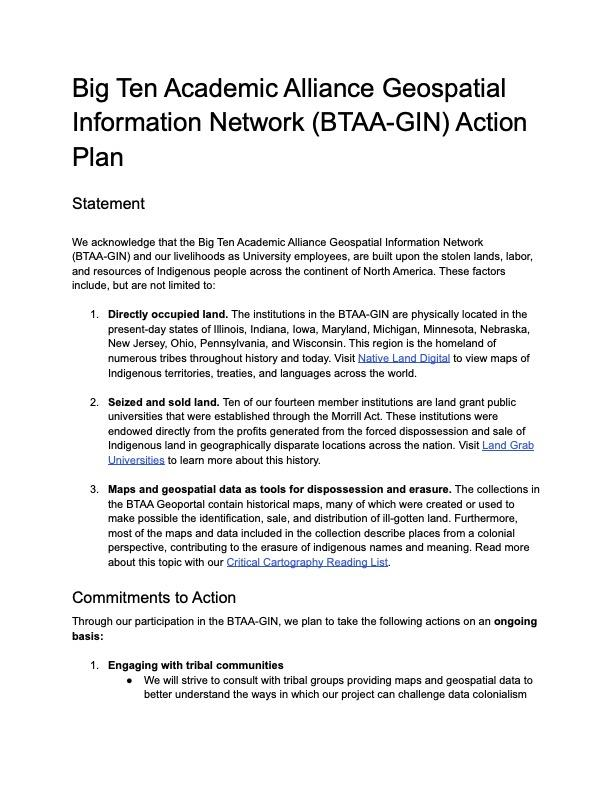
Highlight: Action Plan
The Land Acknowledgement Working Group sunsetted in August after submitting their final report along with an Action Plan .
The Action Plan contains three sections: an acknowledgement Statement\, Commitments to Action\, and Resources. This work has been passed to the Steering Committee\, who are evaluating the next steps.
image of first page of the _ Action Plan_

Statistics: Site Traffic
Top Cities
Ashburn 795 (12.54%) (AWS bot\, blocked now)
(not set) 701 (11.06%)
New York 189 (2.98%)
Chicago 156 (2.46%)
Baltimore 104 (1.64%)
Washington 101 (1.59%)
Columbus 74 (1.17%)
Milwaukee 64 (1.01%)
Philadelphia 62 (0.98%)
Minneapolis 58 (0.91%)
Top search engine queries
sanborn maps
btaa geoportal
power outage by zip code
wisconsin historical aerial photos
franklin county school district map
dearborn ohio
Month of July Views of Blog\, Geoportal\, & Project Site (2018-2022)
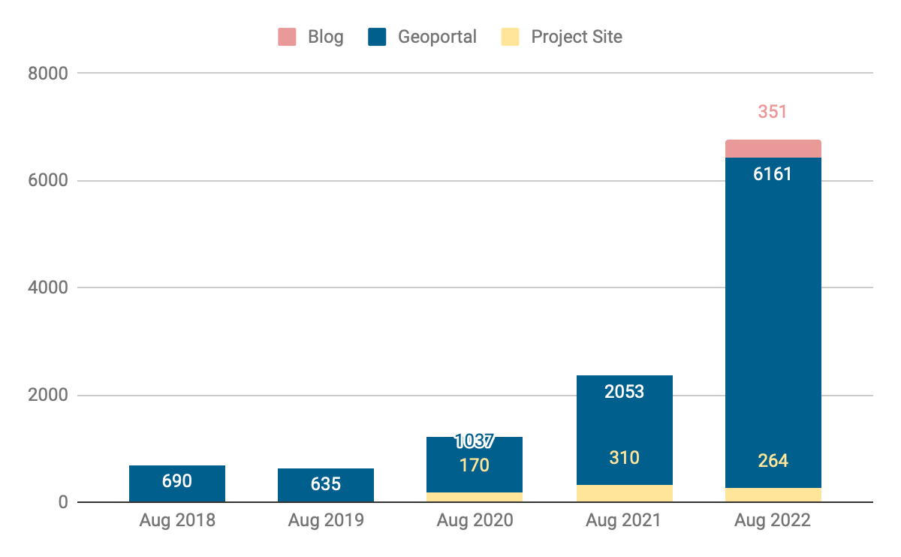

Statistics: Top Visited Pages
| PARENT PAGES | ITEM PAGES | DOWNLOADS |
|---|---|---|
| Wisconsin Historic Aerial Imagery Finder (Aerial Photos 1937-41) (275) | Maryland Power Outages - by ZIP Code: State of Maryland (196) | Roads from INDOT and TIGER Files: Indiana (18) |
| Digital Sanborn Maps (Black & White): All States, 1867-1970 (265) | Digital Sanborn Maps (Black & White) NY (178) CA (148) MA (96) |
Quaternary Geologic Map : Indiana (13) + |
| Sanborn Maps: Pennsylvania, 1884-1938 (104) | Research Guide to Restricted or Licensed Data (83) | Historic County Boundaries and Total Population: United States, 1910 (10) |
| Fire Insurance Maps Online (FIMo): All States - Big Ten Academic Alliance Geoportal (87) | Urban Rural Demarcation Line: Baltimore County, Maryland (68) + | Remonumented Section Corners: Michigan (9) |
| School District Boundaries: Franklin County, Ohio (66) | new to top pages + | |

Operations: Collections
Number of BTAA Geoportal records over time (2017-present)

Total Item Records: 55\,732
New records: 4\,761
Rutgers Maps of New Jersey (4579)
ArcGIS Hubs (138)
Wisconsin LiDAR (34)
Retired records: 299

Operations: Application Development
P rimary milestones 2022
added dashboard queries for GEOMG
upgraded to Ruby 3
Geoportal migrated to AWS servers
enabled multiple downloads per item
implemented new color scheme for accessibility
enabled multiple bounding boxes per item
Release official version 4
GEOMG development
multiple geometries
accessibility improvements
upgraded to GeoBlacklight’s
v.4 release candidate
fixed slow speed issue
improved lifecycle tracking in GEOMG
updated GeoBlacklight documentation
GEOMG development
GEOMG released for adoption

Community: Committees
Steering: Convening a short-term Future Directions Working Group
CDEO: Continuing review of datasets and sources from rural areas sprint \, updating Critical Cartography list of resources\, planning new tutorials
Communications: Changing name to “Community Engagement”\, exploring merging with another committee
Interface: Reviewing work of Library Accessibility Alliance \, investigating tooltips and collection spotlights in the Geoportal
Metadata: Planning metadata cleanup sprint on September 30

Community: Working Groups
Creator Standardization: collaborating asynchronously on “Best Practices for Inputting Creator Field Data” document
Conference Planning: secured keynote speakers\, ready to distribute announcements
Original Content: held kickoff meeting; identified content to address; researching solutions

What’s Next?
September
Issue call for proposals for the BTAA GIS Conference
GeoBlacklight Community Sprint: Summer 2022\, Iteration 2
November
Host BTAA GIS Conference

Big Ten Academic Alliance
Geospatial Information Network
Status Report
July 2022

Table of Contents
Highlight
Statistics Operations Community What’s Next?
Highlight: Welcome Rutgers University
Rutgers University officially joined the BTAA-GIN in July 2022. This brings our our number of institution partners to 14\, and our map now includes New Jersey.
Welcome to our new Team Members Susan Oldenburg (Research Support/GIS Specialist) and Francesca Giannetti (Digital Humanities Librarian).
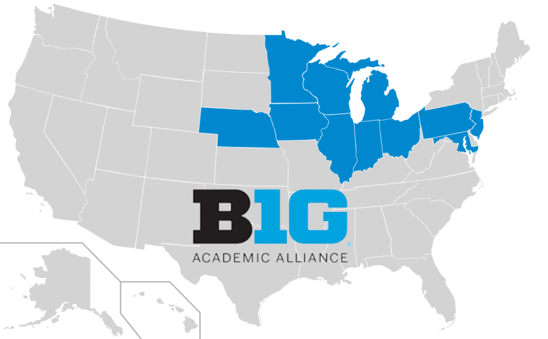

Statistics: Site Traffic
Month of July Views of Blog\, Geoportal\, & Project Site (2018-2022)
How users found the site
Google (76%)
direct link (9%)
spambot [now blocked] (5.5%)
bing (3.5%)
duckduckgo (1%)
yahoo (1%)
datasetsearch.research.google.com (>1%)
guides.libraries.psu.edu (>1%)
geoblacklight.org (>1%)
Top search engine queries
sanborn maps
btaa geoportal
power outage + by zip code / maryland / today
baltimore county permits
sanborn maps nyc
historical aerial photos wisconsin


Statistics: Top Visited Pages
| PARENT PAGES | ITEM PAGES | DOWNLOADS |
|---|---|---|
| Wisconsin Historic Aerial Imagery Finder (Aerial Photos 1937-41) (307) | Maryland Power Outages - by ZIP Code: State of Maryland (504) | Historic County Boundaries and Total Population: United States, 1940 (11) |
| Digital Sanborn Maps (Black & White): All States, 1867-1970 (216) | Digital Sanborn Maps (Black & White) NY (158) CA (122) MI (98) NJ (86) |
Roads from INDOT and TIGER Files: Indiana (10) |
| General Land Office Township Plats: Michigan (58) | Research Guide to Restricted or Licensed Data (94) | Remonumented Section Corners: Michigan (9) |
| Property Data - Tax Map Grids: Maryland (60) | Southwest Anvers Island and Palmer Basin: ASMA No. 7: Antarctica (8) + | |
| Remonumented Section Corners: Michigan (60) | new to top pages + | |
| School District Boundaries: Franklin County, Ohio (54) |

Operations: Collections
Number of BTAA Geoportal records over time (2017-present)

Total Item Records: 51\,260
New records: 3646
Wisconsin state and county data (553)
ArcGIS Hubs (3088)
Retired records: 2479*
*Most ArcGIS Hubs began using a different identifier for their items this summer. This registers as a “new” record for us.

Operations: Application Development
P rimary milestones
added dashboard queries for GEOMG
upgraded to Ruby 3
Geoportal migrated to AWS servers
enabled multiple downloads per item
implemented new color scheme for accessibility
enabled multiple bounding boxes per item
Release official version 4
upgraded to GeoBlacklight’s
v.4 release candidate
fixed slow speed issue
improved lifecycle tracking in GEOMG
update GeoBlacklight documentation

Community: Committees
Steering: developing DEIA goal
CDEO: assessing resources gathered during July sprint; working on Critical Cartography reading list
Communications: finalized DEIA goal (highlight resources related to underserved populations)\, reassessing mission
Interface: discussing how to improve Geoportal accessibility\, considering pop-up survey
Metadata: finalized DEIA goal (reparative\, inclusive description practices)

Community: Working Groups
Land Acknowledgement: submitted final deliverables and ready to sunset
Creator Standardization: collaborating asynchronously on “Best Practices for Inputting Creator Field Data” document
Conference Planning: held kickoff meeting\, divvied up responsibilities\, selected conference date
Original Content: issued charge and plan to kickoff in August

What’s Next?
August
hire graduate Research Assistant for metadata processing
GeoBlacklight Community Sprint: Summer 2022\, Iteration 1
September
Issue call for proposals for the BTAA GIS Conference
GeoBlacklight Community Sprint: Summer 2022\, Iteration 2
Appendix: Business Model Canvas for the BTAA-GIN

Key Activities
Value Propositions
Customer Relationships
Customer Segments
digital curation
collective geospatial infrastructure
instructors & students
Big Ten Academic Alliance
software development
guides & tutorials
geospatial resources are easier to find
outreach & service
Key Resources
librarians & specialists are more connected
diversity of expertise
blog / social media
leadership for the geospatial community
economy of scale
Revenue Streams
partner contributions
technology hosting

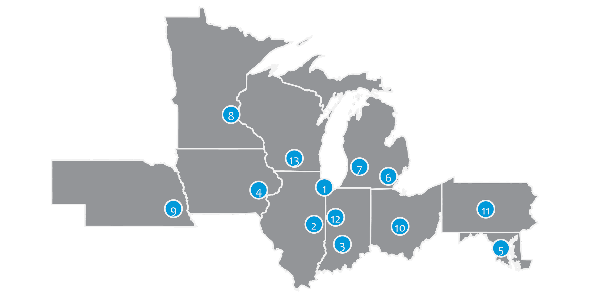
Big Ten Academic Alliance Geospatial Information Network
Project Update: June 2022
Table of Contents


Project Highlight: Multiple Downloads


We were recently able to incorporate a long-standing feature request into the BTAA Geoportal interface: multiple downloads per item . When GeoBlacklight was originally created\, each item page was intended to correspond to a single web service with a single download. Over time\, the application has become more flexible and item pages can represent complex resources. However\, without having the option of presenting multiple downloads\, we always needed to send users back to the original site to access the files.
With the new functionality\, we are able to add multiple downloads per page and attach custom labels that clarify the content and indicate file sizes.
This new feature has been especially useful when adding research data \, which often includes multiple\, but related files.

Examples of new multiple downloads in the Geoportal

Statistics: Item Records
- Total Item Records
- 49\,963
- June 2022 actions
- New records (711)
- notable new additions:
- OHU Map Library (28)
- NJ Open Data (480)
- UMN Conservancy (11)
- Retired (7)


Statistics: Geoportal & Blog Users
Geoportal and Project Site users for the months of June (2018-2022)
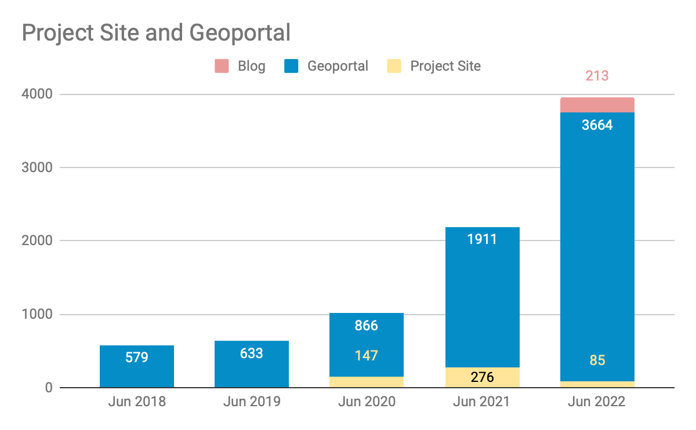

Statistics: Geoportal User Acquisition June 2022
How users found the site
google (82.0%)
(direct) (8.1%)
bing (4.0%)
datasetsearch.research.google.com (1.3%)
duckduckgo.com (1.0%)
yahoo (0.9%)
geoblacklight.org (0.2%)
guides.libraries.psu.edu (0.2%)
guides.nyu.edu (0.2%)
libguides.lib.msu.edu (0.2%)
Top 10 search engine queries
btaa geoportal (28)
sanborn maps (23)
baltimore city tax sale list (12)
sanborn maps new jersey (9)
wisconsin aerial photography catalog (8)
outagamie county gis (7)
power outages by zip code today (7)
sanborn maps pennsylvania (7)
wisconsin 1937 aerial imagery (7)
detroit sanborn maps (6)

Statistics: Top Pages
| Top Viewed Parent Pages | Top Viewed Item Pages | Top Downloaded Items (231 total) |
|---|---|---|
| Wisconsin Historic Aerial Imagery Finder (Aerial Photos 1937-41) (270) Digital Sanborn Maps (Black & White): All States, 1867-1970 (177) Fire Insurance Maps Online (67) |
Research Guide to Restricted or Licensed Data (92) Maryland Power Outages - by ZIP Code: State of Maryland (71) + Current Tax Sale List: City of Baltimore, Maryland (58) Digital Sanborn Maps (Black & White): New York (140) Michigan (81) |
Indiana Roads from INDOT and TIGER Files: Indiana (20) + Urgent Care Facilities: SEMCOG, Southeast Michigan Council of Governments (8) + Historic County Boundaries and Total Population: United States, 1960 (8) City Boundaries [Iowa] (7) + Contour Lines: Milwaukee County GIS and Land Information (6) + |
+ New to top pages

Tech Roadmap: Q3 2022
Recently Completed
Added life cycle tracking in metadata editor (GEOMG) to help find when things were first created and last updated
fixed more Javascript bugs occurring in Safari browsers
Produced a new release for GeoBlacklight that fixes several bugs
To Do
Adjust color scheme for contrast accessibility
Incorporate multiple or complex geometries
participate in GeoBlacklight summer sprint

Activities: Committees
Metadata Committee
Discussed how to normalize the Resource Type facet
Working on DEIA goal wording to be finalized at July meeting
Collection Development (CD) & Education Outreach (EO) Committee
Prepping for collections sprint coming up on July 15th on the topic of Rural Areas as an Underserved Population
Finalizing DEIA goals including implementing parts of the Land Acknowledgement Working Group action plan
Communications Committee
Did not meet in June
Next topics: blog/tweet schedule; finalizing DEIA goals
Interface Committee
Summarized recent sprint findings
Investigating best practices for in-site user surveys
Finalized DEIA goal - accessibility

Activities: Working Groups
- Land Acknowledgement Working Group
- Final documents submitted for review and approval:
- Action Plan
- Final Report
- Creator Standardization Working Group
- Presented to Metadata Committee on strategy for batch cleanup of Creator field
- Began working on Best Practices for creator standardization report
- Original Content Working Group
- Charge sent out
- Set up OSF account: osf.io/wn32s

July
Sunset the Land Acknowledgement Working Group
Incorporate resources from Rutgers University
Collections sprint
Kickoff a Website Content Working Group
Kickoff the GIS Conference Planning Group
Big Ten Academic Alliance Geospatial Information Network
Project Update: May 2022
Table of Contents
Project Highlight: Mapping Chicagoland
Cecilia Smith\, our program team member from the University of Chicago\, led a team that received a successful $348\,930 National Endowment for the Humanities (NEH) grant in April for the proposal “ Mapping Chicagoland .” The project is a partnership between the University of Chicago Library\, the Chicago History Museum\, and Newberry Library to digitize historical maps of Chicago through 1940. In addition to the UChicago Library website and Chicago Collections Consortium \, the BTAA Geoportal was cited in the grant as one of the platforms where the maps will be made available. The collaboration will involve scanning\, adding spatial data\, creating metadata\, and sharing 4\,101 digitized maps in the Fall of 2024.
Read more about this exciting new development:
NEH awards UChicago Library grant to digitize Chicagoland’s historical maps
NEH grant will support UChicago’s partnership with Newberry Library\, Chicago History Museum
CHM tapped to partner on NEH grant to digitize Chicagoland’s historical maps
Statistics: Item Records
- Total Item Records
- 49\,255
- May 2022 actions
- New records (679)
- American Panorama (537)
- Natural Resources Research Institute (106)
- Michigan State University Maps (36)
- Retired (2)
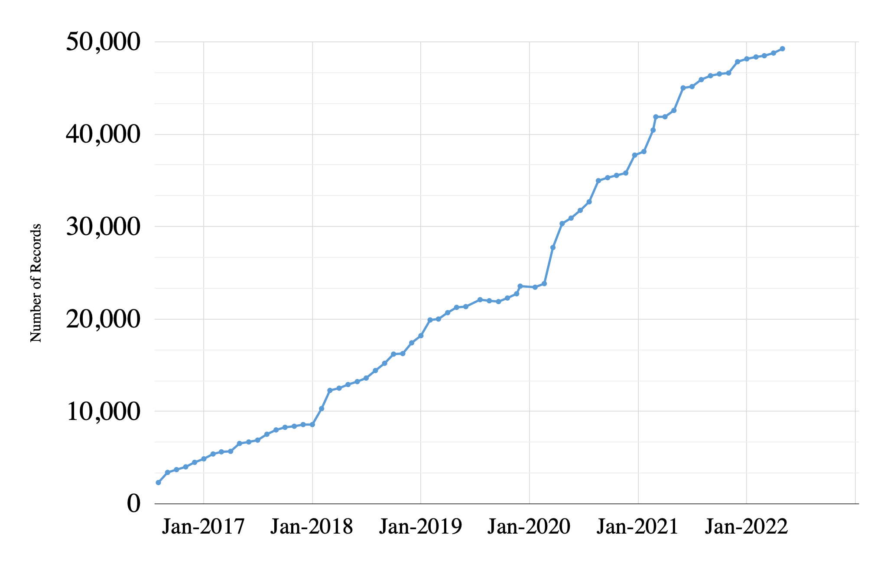
Statistics: Geoportal & Blog Users
Geoportal and Project Site users for the months of May (2018-2022)

Statistics: Geoportal User Acquisition May 2022
How users found the site
google.com (82%)
direct link (9%)
bing.com (3%)
datasetsearch.research.google.com (1%)
duckduckgo.com (1%)
yahoo.com (1%)
Less than 1% of traffic:
geoblacklight.org
guides.libraries.psu.edu
sites.google.com
geography.wisc.edu
guides.nyu.edu
info.com
libguides.lib.msu.edu
libguides.umn.edu
twitter.com
Top 10 search engine queries
sanborn maps (26)
btaa geoportal (18)
baltimore tax sale 2022 property list (17)
wisconsin historical aerial photos (12)
franklin county ohio school district map (8)
franklin county school district map (8)
baltimore city tax sale 2022 property list (7)
baltimore city tax sale list (7)
historical aerial photos wisconsin (7)
gun offender registry baltimore (6)
Statistics: Top Pages
| Top Viewed Parent Pages | Top Viewed Item Pages | Top Downloaded Items (254 total) |
|---|---|---|
| Wisconsin Historic Aerial Imagery Finder (Aerial Photos 1937-41) (313) Digital Sanborn Maps (Black & White): All States, 1867-1970 (157) |
Current Tax Sale List: City of Baltimore, Maryland (147) Research Guide to Restricted or Licensed Data (80) Remonumented Section Corners: Michigan (71) Digital Sanborn Maps (Black & White): Illinois (70) California (69) New York (69) New Jersey (66) |
Remonumented Section Corners: Michigan (13) Road Centerline: Licking County, Ohio, 2020 (7) + City Boundaries [Iowa] (6) + Topography 01: Lorain County, Ohio (6) + Historic County Boundaries and Total Population: United States, 1860 (6) |
+ New to top pages
Tech Roadmap: Q2 2022
Recently Completed
Enabled multiple downloads per item
Added GEOMG facet for Date Created (first uploaded)
Added additional time period buckets to Geoportal to reflect items before 1500 and after 2020
fixed Javascript bugs occurring in Safari browsers
To Do
Add “recently added items” button to Geoportal
Add new metadata field: notes for end user
Activities: Committees
Metadata Committee
Investigating synonyms and stemming options in Solr to improve search results
Analyzing usefulness of Resource Type field and facet
Collection Development (CD) & Education Outreach (EO) Committee
Met with Communications to discuss DEIA goal-setting opportunities around rural areas
Held first Mappy Hour with 8 Team members
EO to look at ESRI StoryMaps platform issues next
Communications Committee
Exploring DEIA goal of focusing on rural America rural communities as an underserved population
Interface Committee
Planning for June Interface sprint
Activities: Working Groups
Land Acknowledgement Working Group
Working on an “ Action plan ” using the guide Beyond Land Acknowledgements
Creator Standardization Working Group
Exploring techniques for batch normalization\, such as FAST API (OCLC product) + Open Refine
June
Interface sprint
Sunset the Land Acknowledgement Working Group
July
Onboard Rutgers University to the Team
Collections sprint
Kickoff a Website Content Working Group


Big Ten Academic Alliance Geospatial Information Network
Project Update: April 2022
Table of Contents


Project Highlight: Adding resources in response to current events in Ukraine
Our collection development efforts typically focus on geodata and maps that are created and held by institutions located in Big Ten states. However\, we also make an effort to meet the research needs of users\, particularly in response to current events. In the past\, we sought out and added Covid-19 and racial equity resources.
In response to the invasion of Ukraine\, we added new geodata from Stanford University of Ukrainian boundaries and two interactive websites that are tracking the events. We also identified numerous information resources that do not fit into the Geoportal collection for reasons of being ephemeral or nonspatial. These information resources have been listed and summarized in a March blog post .
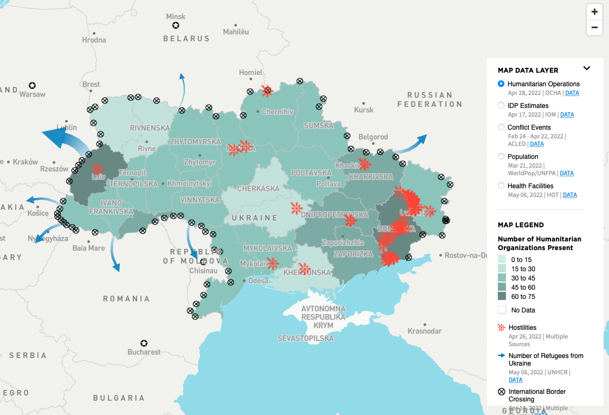
Screenshot of the Ukraine Data Explorer \, provided by the Humanitarian Data Exchange

Statistics: Item Records
Total Item Records
48\,790
April 2022 actions
New records (647)
Retired (21)
Suppressed (124)
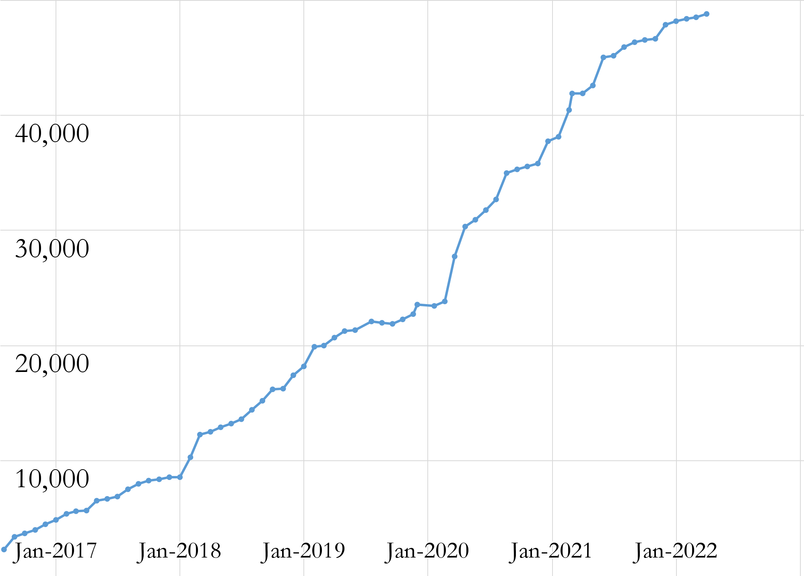

Statistics: Geoportal & Blog Users
Geoportal and Project Site users for the months of April (2018-2022)
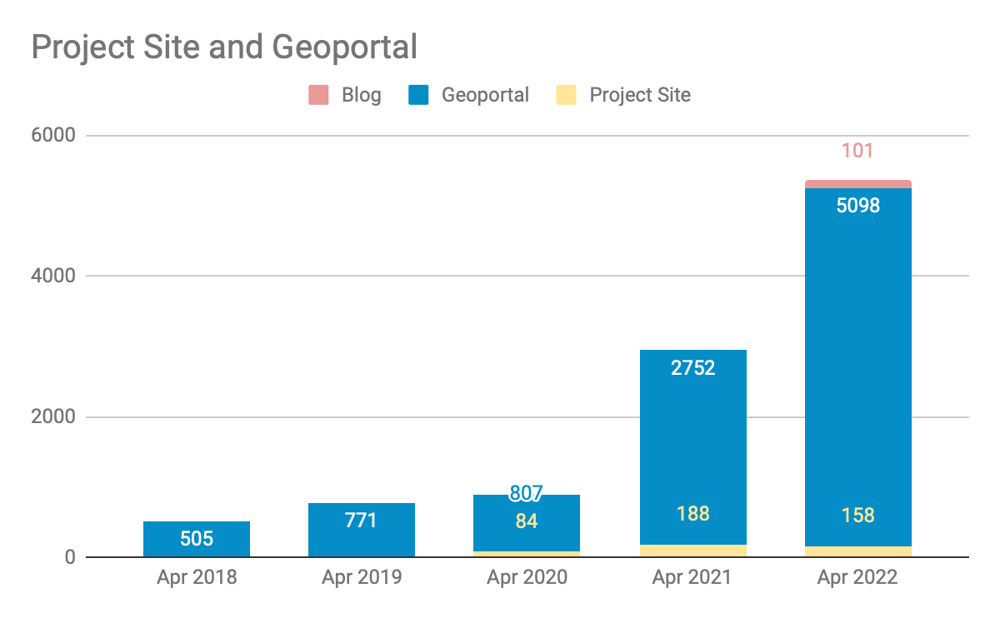

Statistics: Top Pages
| Top Viewed Parent Pages | Top Viewed Item Pages | Top Downloaded Items (404 total) |
|---|---|---|
| Wisconsin Historic Aerial Imagery Finder (Aerial Photos 1937-41) (373) Digital Sanborn Maps (Black & White): All States, 1867-1970 (145) Sanborn Maps: Pennsylvania, 1884-1938 (100) City of Baltimore GIS Open Data (61) |
Gun Offenders: City of Baltimore, Maryland (304) + Current Tax Sale List: City of Baltimore, Maryland (297) Research Guide to Restricted or Licensed Data (94) Digital Sanborn Maps (Black & White): Michigan (92) California (82) New Jersey (64) Iowa (61) |
Indiana Roads from INDOT and TIGER Files (19) Impervious Surfaces, Land Use: Prince George's County, Maryland, 2014 (19) + Historic County Boundaries and Total Population: United States, 1930 (11) + Landfills, Class III: Prince George's County, Maryland (6) + |
+ New to top pages

Tech Roadmap: Q2 2022
Recently Completed
Renamed GitHub organization ( https://github.com/geobtaa )
To Do
Enable multiple downloads
Add “recently added” widget to Geoportal
Add additional time period buckets to Geoportal to reflect items before 1500 and after 2020
Add new metadata field: notes for end user

Activities: Committees
Metadata Committee
Launched a Creator Standardization Working Group to develop guidelines for how to clean up the “Creator” field.
Collection Development (CD) & Education Outreach (EO) Committee
Planning for a July sprint topic to look for new collections.
Completed annual review of Collection Development Policy (Notable updates in Language and Diversity sections of collection scope)
Developing new tutorials
Communications Committee
Next blog post sprint scheduled for May
Defining DEIA goals for blog post accessibility and planning to host a themed blog post sprint to highlight an underserved population
Interface Committee
Next sprint scheduled for June
Exploring ideas for a survey or poll for Geoportal users to provide feedback

Activities: Working Groups
Land Acknowledgement Working Group
Reading critiques and guides to land acknowledgements
Working on an “ Action plan ” using the guide Beyond Land Acknowledgements
Creator Standardization Working Group
Held kickoff meeting
Planning to develop guidance for how to standardize the Creator field in GeoBlacklight metadata\, while keeping potential workflow considerations in mind.

May
Blog post sprint
June
Interface sprint
Sunset the Land Acknowledgement Working Group
July
Onboard Rutgers University to the Team
Collections sprint
Kickoff a Website Content Working Group